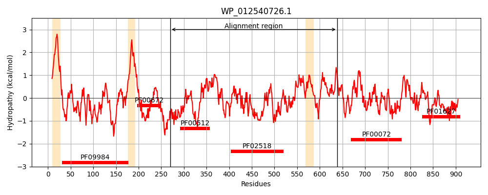
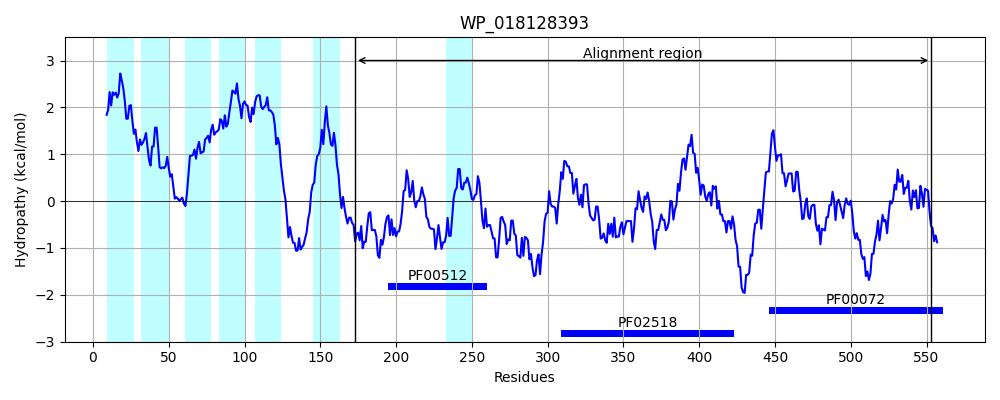
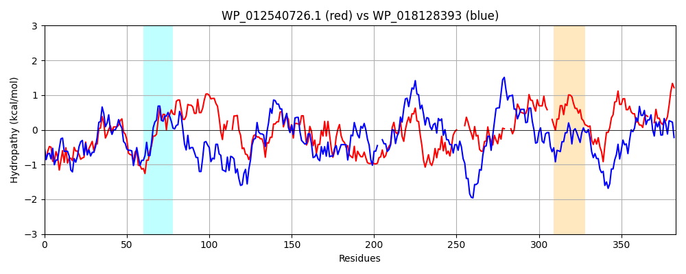

Hit Accession: WP_018128393
Hit TCID: 9.B.238.3.1
Hit Description: gnl|BL_ORD_ID|20890 gnl|TC-DB|WP_018128393.1|9.B.238.3.1 hybrid sensor histidine kinase/response regulator [Balneola vulgaris]
Mach Len: 383
e:0.000000
Query TMS Count : 3
Hit TMS Count: 7
TMS-Overlap Score: 0.700000
Predicted Substrates:None
BLAST Alignment:
Score: 427 , Bit scores: 169 bits, E-value: 2.5e-44, Alignment length: 383, Percentage identity: 32
Query: 270 EQMEIQNVELDLAKKRAQEAARIKSEFLANMSHELRTPLNGVIGFTRLTLKTDLNATQRDHLTTIERSANNLLAIINDVLDFSKLEAGKLILESIPFLLRTSLDEVVTLLAH--SAHDKGLELTLNIKNNVPDNVIGDPLRLQQIVTNLVGNAIKFTEHGNIDVLVEQRAISNSRVQIEIQIHDTGIGIPERDQSRLFQAFRQADASISRRHGGTGLGLVITQRLVKEMGGDISFHSQPNRGSTFWFHISL----DLNPNAIPDMLNTDGLTGKRLAYVE---ANATAAQCTLEMLAATPLEVIYS--PTFSSLAEAQYDILLVGIPVSMRDLSPHREKLVKACAMSDNVLLALPCHAQVSAEALKR---DGVAACLLKPLTT 638
E++ ++L K RA+ A KS+FLA +SHE+RTPLNG++G T L +T+L+ QR+ +T + S+N L ++I DVLD++ LE KL+L++ ++ L +V + + +K +EL + +P+ VIGD RL+QI+ NLV NA+KFT G I + A ++ I D+GIGI E+D++ LF F + A + + GTGLGL I + L+ M G I S+ GSTF I D + + D + + G ++ E N + LE L+ T +E++ + YD +L+ I + D EK+ + A ++ + A V L R G+ KPL T
Sbjct: 173 EKLSKAVLDLKSEKIRAEAADDTKSQFLATISHEMRTPLNGIVGITELLEETNLSDEQRELVTNLAYSSNMLNSLIGDVLDYTLLEDRKLVLQNNEIHIQKELKNLVDMFKPKIDSKNKRIELKFEYDSEIPEIVIGDVTRLRQILVNLVNNAVKFTNEGYIHIKTRFIAEEEDIQRVRFTIEDSGIGISEQDKALLFTKFFR--AKTNDKVEGTGLGLAICRGLIDLMNGAIYVDSKLGEGSTFTIEIPFRAYEDKSVQEVKDHKDKECFAGLKILIAEDVLVNQLVLKKMLEHLSVTDVEIVDNGEDAVERAISDNYDFVLMDIQMPKLDGMDASEKITEYYADKEHKPKIIAVTANVMKSDLARYAEVGIIDAATKPLNT 553 | Protein Hydropathy Plots: |
|---|
|  |  |
Pairwise Alignment-Hydropathy Plot:
|
|---|
|  |